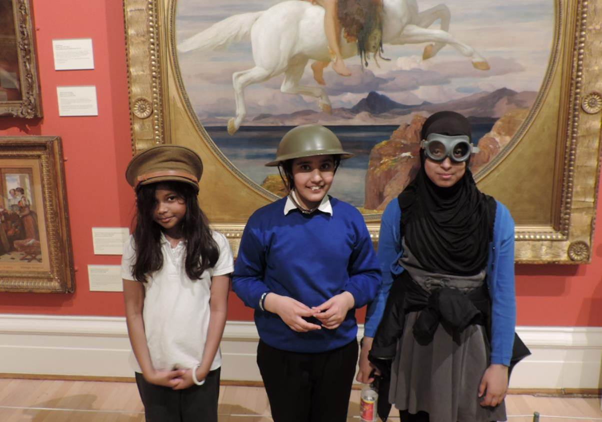

‘Very often people lack a sense of identity and a sense of feeling proud of the place where they live. By creating a very strong perception of the city and its long history, we hope that museums will really help to engender an enthusiasm in people for living in the city.’ – Sarah Levitt

Over 10 years of partnership
We first started working with the British Museum well over 10 years ago when we were invited to be part of a project called Partnership UK. From that starting point we’ve had some wonderful activities, spotlight displays and a major exhibition. We have a continuing dialogue about potential loans and projects with the British Museum team, where we discuss what’s appropriate, what’s available, what Leicester and its communities might like.
The Sikh fortress turban
We were always really keen on having a display of the Sikh Fortress Turban – a wonderful, huge, dark, tall, blue turban with great steel rings around it. These were used in warfare. It’s a huge thing and it attracted a deal of interest, both among our Sikh communities and also among the general public. When we get spotlight displays we tend to show them in a small gallery alongside our main galleries. In this case the turban was displayed next to the Victorian art gallery and it was beautifully lit – just that object with some interpretive material. The power of having one stunning individual item is really great – people came to see the one object. These fortress turbans are really impressive and well known among the Sikh community. They say a huge amount about the Sikh faith. If you go into one of our local Gurdwaras you can see similar rings on display, but not made up as part of a turban. People from all age groups and all backgrounds came to see the turban: young lads, older people, people from the Sikh community, Sikh elders. Everyone was just really fascinated by it.
Indian jade, Babylonian terracotta, and contemporary African art
We’ve had something called the Wandering Buddha, which is this most exquisite statue of the Buddha as a tall standing young man – not the normal image that people associate with him. We’ve had the most beautiful Indian jade turtle, a Babylonian terracotta called ‘the Queen of the Night’, plus a wonderful artwork called the ‘Throne of Weapons’, made from decommissioned guns from Mozambique. Within its very diverse communities, Leicester has a large community of refugees and asylum seekers. Lots of young people in Leicester are familiar with that war-torn background, and many have direct family memories of this. The Throne of Weapons came to New Walk Museum for a weekend and we also took it to one of our local colleges. Many of the students had experienced difficulties and they really enjoyed having it there.
Engaging the wider community
There are several advantages to the British Museum partnership. One of them is that we can bring superb objects here. Also, because people locally know that these are from the British Museum, it’s an act of generosity, an act of sharing, an act of interest in Leicester’s communities, because Leicester’s communities are the British Museum’s communities. Our partnership is a two-way process – we organised the loan of the reconstructed head of King Richard III to the British Museum and that created a great deal of interest in Leicester. So it raises our profile, it raises the British Museum’s profile, it shows that investment in the British Museum is something that benefits everybody in the UK, and I think it’s a very important connection. It encourages people living in Britain to go to the British Museum and to feel that it is their museum.
Museum of the Citizen
The partnership event with the British Museum on Friday [13 November 2015] was a chance to showcase what’s important for our young citizens. Leicester is a city of about 330,000 people and we have a very young community – one of the youngest in the whole of the UK. We have lots of students – two universities and a huge college – young families, and we also have a lot of the UK’s newer communities – people who have settled in the UK since the last war. We’re incredibly diverse. Over 20 languages are spoken in Leicester and French is one of the fastest growing languages. We have a wonderful huge Asian community and we recently celebrated Diwali. We have large Muslim, Hindu, Sikh, and Jain communities. We also have growing Chinese, African-Caribbean and Middle-Eastern and Eastern European communities. We also have many refugees and asylum seekers, so it’s just a great, diverse place to be.
A vision of Leicester for young people
Leicester is an incredibly diverse city and part of that is the fact that it’s always been a place that people have come to. People came to Leicester in Medieval times, the 15th to 19th centuries, as well as the more recent past. We have long celebrated our association with King Richard III. Finding his remains in Leicester was a fantastic way for museums and heritage to bring people together from every community. This is what museums are about – a feeling of shared heritage, a shared pride and interest in the place where we live and a real sense of pride and confidence. This is something we can do for our young citizens. Very often people lack a sense of identity and a sense of feeling proud of the place where they live. By creating a very strong perception of the city and its long history – Leicester was also a major Roman city – we hope that museums will really help to engender an enthusiasm in people for living in the city. Leicester is a ‘place to be’ these days, and I hope that our museum can help people to feel that.
Sarah Levitt, Head of Arts and Museums at Leicester City Council